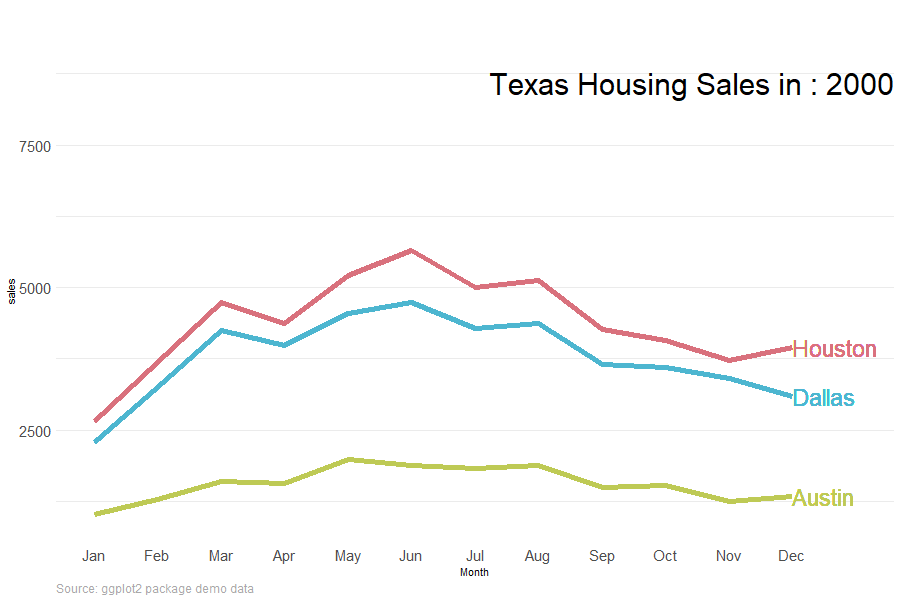

Chapter 7 Animation
7.1 ggplot animation
Animation is quick to add to ggplot using the gganimate package. I’ve had a play here inspired by a good Tweet of examples.
I’ve found animation is usually most effective at showing changes over time. Here is the annual pattern of house sales changing each year.

# Method from: https://github.com/thomasp85/gganimate/wiki/Temperature-time-series
# https://stackoverflow.com/questions/54945861/problems-with-geom-text-and-pausing-the-animation
# for each city and year find the sales value in the latest month availalbe
# usually this is 12 but sometimes it's an earlier month
label_anim <-
df %>%
dplyr::group_by(city,year) %>%
dplyr::summarise(max_month = max(month)) %>%
dplyr::ungroup() %>%
dplyr::inner_join(df_red, by = c("city"="city",
"year"="year",
"max_month" = "month")) %>%
dplyr::mutate(label_it = sales) %>%
dplyr::select(city,year,max_month,label_it)
colors <- c("Houston" = "#D9717D", "Dallas" = "#4DB6D0", "Austin" = "#BECA55")
p <- df %>%
dplyr::filter(city %in% c("Houston", "Dallas", "Austin")) %>%
dplyr::left_join(label_anim,
by = c("city" = "city","year" = "year")) %>%
ggplot2::ggplot() +
ggplot2::aes(x = month,
y = sales,
colour = city) +
ggplot2::geom_line(size = 2) +
ggplot2::theme_minimal() +
ggplot2::coord_cartesian(clip = 'off') + # allow labels outside of plot
ggplot2::theme(legend.position = "none") +
gganimate::transition_states(states = year,
transition_length = 3,
state_length = 1) +
ggplot2::labs(title = "Texas Housing Sales in : {closest_state}",
caption = "Source: ggplot2 package demo data"
) +
ggplot2::theme(plot.title = element_text(hjust = 1,
vjust = -10,
size = 30),
panel.grid.major.x = element_blank(),
panel.grid.minor.x = element_blank(),
strip.text.x = element_text(size = 15),
axis.text.x = element_text(size = 15),
axis.text.y = element_text(size = 15),
plot.caption = element_text(
hjust = 0,
size = 12,
color = "darkgrey"
)
) +
ggplot2::scale_color_manual(values = colors) +
ggplot2::scale_x_continuous(name = "Month",
limits = c(1,13),
breaks = c(1,2,3,4,5,6,7,8,9,10,11,12),
label = c("Jan","Feb","Mar","Apr","May","Jun","Jul","Aug","Sep","Oct","Nov","Dec")) +
ggplot2::geom_text(aes(x = max_month,
y = label_it,
label = city),
hjust = 0,
size = 8)
gganimate::animate(p, width = 900,
height = 600,
end_pause = 10,
fps = 20,
rewind = FALSE,
duration = 15)
gganimate::anim_save(filename = "housing.gif")7.2 plotly animation
Carson Sievert’s book shows us how to animate in plotly.
The code to animate a plotly plot is easier than for ggplot. Simply specify which column to animate over in the
frameargument ofplotly::add_lines().
df_red %>%
plotly::plot_ly(alpha = 1) %>%
plotly::add_lines(
x = ~month,
y = ~sales,
frame = ~year, # this single line of code turns it into an animation!
color = ~factor(city),
line = list(simplify = FALSE)
) %>%
plotly::layout(yaxis = list(title = "Sales"))## Warning in RColorBrewer::brewer.pal(N, "Set2"): n too large, allowed maximum for palette Set2 is 8
## Returning the palette you asked for with that many colors
## Warning in RColorBrewer::brewer.pal(N, "Set2"): n too large, allowed maximum for palette Set2 is 8
## Returning the palette you asked for with that many colors- Here we play around with the animation style.
df_red %>%
plotly::plot_ly(alpha = 1) %>%
plotly::add_lines(
x = ~month,
y = ~sales,
frame = ~year,
color = ~factor(city),
line = list(simplify = FALSE)
) %>%
plotly::layout(yaxis = list(title = "Sales")) %>%
plotly::animation_opts(frame = 1000,
# easing = "elastic",
easing = "bounce",
redraw = FALSE) %>%
plotly::animation_slider(currentvalue = list(prefix = "YEAR ",
font = list(color="blue")))## Warning in RColorBrewer::brewer.pal(N, "Set2"): n too large, allowed maximum for palette Set2 is 8
## Returning the palette you asked for with that many colors
## Warning in RColorBrewer::brewer.pal(N, "Set2"): n too large, allowed maximum for palette Set2 is 8
## Returning the palette you asked for with that many colors